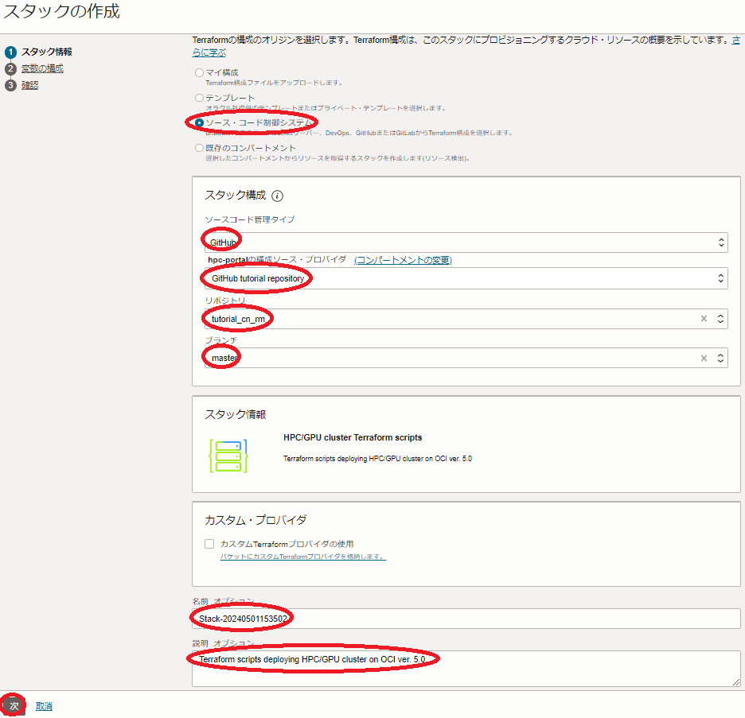

このチュートリアルは、GPUクラスタのGPUノードに最適なベアメタルインスタンス（本チュートリアルでは BM.GPU4.8 を使用）を クラスタ・ネットワーク でノード間接続する、機械学習ワークロードを実行するためのGPUクラスタを構築する際のベースとなるインフラストラクチャを、予め用意された Terraform スクリプトを活用して自動構築し、Dockerコンテナ上で NCCL（NVIDIA Collective Communication Library） のGPU間通信性能を NCCL Tests で検証します。
この自動構築は、 Terraform スクリプトを リソース・マネージャ に読み込ませて作成する スタック を使用する方法と、 Terraform 実行環境を用意して Terraform CLIを使用する方法から選択することが出来ます。
このチュートリアルで作成する環境は、ユーザ管理、ホスト名管理、共有ファイルシステム、プログラム開発環境等、必要なソフトウェア環境をこの上に整備し、ご自身の要件に沿ったGPUクラスタを構築する際の基礎インフラストラクチャとして利用することが可能です。
なお、これらのクラスタ管理に必要なソフトウェアの導入までを自動化する HPCクラスタスタック も利用可能で、詳細は GPUクラスタを構築する(スタティッククラスタ自動構築編) を参照してください。
本チュートリアルで作成するGPUクラスタ構築用の Terraform スクリプトは、そのひな型が GitHub のパブリックレポジトリから公開されており、適用すると以下の処理を行います。
- VCN と関連するネットワークリソース作成
- Bastionノード作成
- GPUノード用 インスタンス構成 作成
- クラスタ・ネットワーク とGPUノード作成
- GPUクラスタ内のノード間SSHアクセスに使用するSSH鍵ペア作成・配布
- GPUノードの全ホスト名を記載したホストリストファイル（ /home/opc/hostlist.txt ）作成
- 作成したBastionノード・GPUノードのホスト名・IPアドレス出力
Bastionノードは、接続するサブネットをパブリックとプライベートから選択することが可能（※1）で、以下のBastionノードへのログイン方法に合わせて選択します。
- インターネット経由ログイン -> パブリックサブネット接続
- 拠点間接続経由ログイン > プライベートサブネット接続
※1）構築方法に Terraform CLIを採用する場合は、パブリックサブネット接続のみ選択可能です。
また VCN と関連するネットワークリソースは、既存のものを使用することも可能で、この場合はこれらが以下の条件を満たしているている必要があります。
- プライベートサブネットが存在する
- パブリックサブネットが存在する（Bastionノードパブリック接続の場合）
- パブリックサブネット・プライベートサブネット間で セキュリティ・リスト によりアクセスが制限されていない（Bastionノードパブリック接続の場合）
- プライベートサブネットが Oracle Cloud Agent HPCプラグインの動作条件を満たしている（※2）
※2）この詳細は、 OCI HPCテクニカルTips集 の クラスタネットワーキングイメージを使ったクラスタ・ネットワーク接続方法 の 1-2. 接続サブネットのOCA HPCプラグイン動作条件充足確認 を参照してください。


Bastionノード作成は、 cloud-init 設定ファイル( cloud-config )を含み、 cloud-init がBastionノード作成時に以下の処理を行います。
- タイムゾーンをJSTに変更
- ホームディレクトリ領域のNFSエクスポート
- GPUノードのDNS名前解決をショートホスト名で行うための resolv.conf 修正
またGPUノード用 インスタンス構成 は、 cloud-config を含み、 cloud-init がGPUノード作成時に以下の処理を行います。
- タイムゾーンをJSTに変更
- NVMe SSDローカルディスク領域ファイルシステム作成
- firewalld 停止
- ルートファイルシステム拡張
- BastionノードのDNS名前解決をショートホスト名で行うための resolv.conf 修正
- Bastionノードホームディレクトリ領域のNFSマウント
所要時間 : 約2時間
前提条件 : GPUクラスタを収容するコンパートメント(ルート・コンパートメントでもOKです)の作成と、このコンパートメントに対する必要なリソース管理権限がユーザーに付与されていること。
注意 : チュートリアル内の画面ショットについては、OCIの現在のコンソール画面と異なっている場合があります。
0. 事前準備
0-0. 概要
本章は、GPUクラスタを構築する際事前に用意しておく必要のあるリソースを作成します。
この手順は、構築手法に リソース・マネージャ を使用する方法を採用するか、 Terraform CLIを使用する方法を採用するかで異なります。
-
リソース・マネージャ を使用する方法
- 構成ソース・プロバイダ 作成
- スタック 作成
-
Terraform CLIを使用する方法
- Terraform 実行環境構築
- Terraform スクリプト作成
以降では、2つの異なる構築手法毎にその手順を解説します。
0-1. リソース・マネージャを使用する方法
0-1-1. 構成ソース・プロバイダ作成
本章は、ひな型となる Terraform スクリプトを GitHub パブリックレポジトリから取り込むための 構成ソース・プロバイダ を作成します。
構成ソース・プロバイダ の作成は、 ここ を参照してください。
0-1-2. スタック作成
本章は、GPUクラスタを構築するための リソース・マネージャ 用 スタック を作成します。
OCIコンソールにログインし、GPUクラスタを構築するリージョンを選択後、 開発者サービス → リソース・マネージャ → スタック とメニューを辿ります。
次に、表示される以下画面で、スタックの作成 ボタンをクリックします。

次に、表示される以下 スタック情報 画面で、以下の情報を入力し、下部の 次 ボタンをクリックします。
- Terraformの構成のオリジン : ソース・コード制御システム
- ソースコード管理タイプ : GitHub
- 構成ソース・プロバイダ : 先に作成した 構成ソース・プロバイダ
- リポジトリ : tutorial_cn_rm
- ブランチ : master
- 名前 : スタックに付与する名前（任意）
- 説明 : スタックに付与する説明（任意）

次に、表示される 変数の構成 画面で、各画面フィールドに以下の情報を入力し、下部の 次 ボタンをクリックします。
-
General options フィールド
- Compartment : GPUクラスタを構築する コンパートメント
- Availability Domain : GPUクラスタを構築する 可用性ドメイン
- SSH public key : Bastionノードにログインする際使用するSSH秘密鍵に対応する公開鍵
（公開鍵ファイルのアップロード（ SSHキー・ファイルの選択 ）と公開鍵のフィールドへの貼り付け（ SSHキーの貼付け ）が選択可能） - Private bastion : Bastionノードをプライベートサブネットに接続するかどうかを指定（デフォルト：パブリックサブネット接続）
（パブリックサブネットに接続する場合はチェックオフ/プライベートサブネットに接続する場合はチェック） - Use existing VCN : 既存の VCN を使用するかどうかを指定（デフォルト： VCN を新規作成）
（既存の VCN を使用する場合は、チェックすると表示される VCN ・パブリックサブネット・プライベートサブネットの各フィールドにOCIDを指定します。）

-
Compute/GPU node options フィールド
- Display name postfix : GPUノードホスト名の接尾辞（※3）
- Shape : BM.GPU4.8
- Node count : GPUノードのノード数（デフォルト：2）
- Image OCID : GPUノードのイメージOCID（※4）
- Boot volume size : GPUノードのブートボリュームサイズ（200GB以上）
- cloud-config : GPUノードの cloud-init 設定ファイル( cloud-config )（※5）
- NPS for BM.GPU4.8 : GPUノードの NPS 設定値 (デフォルト：NPS4) （※6）
- SMT : GPUノードの SMT 設定値 (デフォルト：有効) （※6）
※3） 例えば gpu4-ol89 と指定した場合、GPUノードのホスト名は inst-xxxxx-gpu4-ol89 となります。（ xxxxx はランダムな文字列）
※4）以下のOCIDを指定します。なおこのイメージは、Bastionノードにも使用されます。
| No. （※7） |
Oracle Linux バージョン |
OCID |
|---|---|---|
| 7 | 8.9 | ocid1.image.oc1..aaaaaaaag36bbqszitkjcnnuauf3tiu3dg6bg2q7goj2uaxbbgnszan66fna |
| 9 | 8.8 | ocid1.image.oc1..aaaaaaaaeka3qe2v5ucxztilltohgmsyr63s3cd55uidtve4mtietoafopeq |
| 8 | 7.9 | ocid1.image.oc1..aaaaaaaa42ozstmmllgevxjvcbompvj6632lwlsigaudh26os7rsmfbcoilq |
※5）以下をテキストファイルとして保存し、ブラウザから読み込みます。
なお既存の VCN を使用する場合は、以下の cloud-config 中のDNSサーチパスにパブリックサブネット名（public.vcn.oraclevcn.com）を追加している箇所を、既存のパブリックサブネット名に変更します。
#cloud-config
timezone: Asia/Tokyo
runcmd:
#
# Mount NVMe local storage
- vgcreate nvme /dev/nvme0n1 /dev/nvme1n1 /dev/nvme2n1 /dev/nvme3n1
- lvcreate -l 100%FREE nvme
- mkfs.xfs -L localscratch /dev/nvme/lvol0
- mkdir -p /mnt/localdisk
- echo "LABEL=localscratch /mnt/localdisk/ xfs defaults,noatime 0 0" >> /etc/fstab
- systemctl daemon-reload
- mount /mnt/localdisk
#
# Stop firewalld
- systemctl disable --now firewalld
#
# Expand root file system to those set by instance configuration
- /usr/libexec/oci-growfs -y
#
# Add public subnet to DNS search
- sed -i '/^search/s/$/ public.vcn.oraclevcn.com/g' /etc/resolv.conf
- chattr -R +i /etc/resolv.conf
#
# NFS mount setting
- echo "bastion:/home /home nfs defaults,vers=3 0 0" >> /etc/fstab
- systemctl daemon-reload
- mount /home
※6）詳細は、 パフォーマンス関連Tips集 の パフォーマンスに関連するベア・メタル・インスタンスのBIOS設定方法 を参照してください。
※7）OCI HPCテクニカルTips集 の クラスタネットワーキングイメージの選び方 の 1. クラスタネットワーキングイメージ一覧 のイメージNo.です。
次に、表示される 確認 画面で、これまでの設定項目が意図したものになっているかを確認し、以下 作成されたスタックで適用を実行しますか。 フィールドの 適用の実行 をチェックオフし、下部の 作成 ボタンをクリックします。

ここで 適用の実行 をチェックした場合、 作成 ボタンのクリックと同時に スタック の適用が開始され、GPUクラスタの構築が始まりますが、このチュートリアルでは後の章で改めて スタック の適用を行います。
これで、以下画面のとおりGPUクラスタ構築用 スタック が作成されました。
0-2. Terraform CLIを使用する方法
0-2-1. Terraform実行環境構築
本章は、 Terraform CLIを使用してGPUクラスタのライフサイクル管理を実行する Terraform 実行環境を構築します。
この実行環境は、インターネットに接続された Linux ・ Windows ・ Mac の何れかのOSが稼働している端末であればよく、以下のような選択肢が考えられます。
- OCI上の Linux が稼働するVMインスタンス
- ご自身が使用する Windows / Mac パソコン
- ご自身が使用する Windows / Mac パソコンで動作する Linux ゲストOS
本チュートリアルは、この Terraform 実行環境のOSに Oracle Linux 8.9を使用します。
Terraform 実行環境は、以下のステップを経て構築します。
- Terraform インストール
- Terraform 実行環境とOCI間の認証関係締結（APIキー登録）
具体的な Terraform 実行環境構築手順は、チュートリアル TerraformでOCIの構築を自動化する の 2. Terraform環境の構築 を参照してください。
また、関連するOCI公式ドキュメントは、 ここ を参照してください。
0-2-2. Terraformスクリプト概要
本チュートリアルで使用するGPUクラスタ構築用の Terraform スクリプトは、そのひな型を GitHub のパブリックレポジトリで公開しており、以下のファイル群で構成されています。
| ファイル名 | 用途 |
|---|---|
| cn.tf | インスタンス構成 と クラスタ・ネットワーク の定義 |
| outputs.tf | 作成したリソース情報の出力 |
| terraform.tfvars | Terraform スクリプト内で使用する変数値の定義 |
| variables.tf | Terraform スクリプト内で使用する変数の型の定義 |
| instance.tf | Bastionノードの定義 |
| provider.tf | テナンシ ・ユーザ・ リージョン の定義 |
| vcn.tf | 仮想クラウド・ネットワーク と関連するネットワークリソースの定義 |
これらのうち自身の環境に合わせて修正する箇所は、基本的に terraform.tfvars と provider.tf に集約しています。
また、これらのファイルと同じディレクトリに user_data ディレクトリが存在し、 cloud-init 設定ファイル（ cloud-config ）を格納しています。
この cloud-config を修正することで、構築するGPUクラスタのOSレベルのカスタマイズをご自身の環境に合わせて追加・変更することも可能でます。
0-2-3. Terraformスクリプト作成
Terraform スクリプトの作成は、まず以下の GitHub レポジトリからひな型となる Terraform スクリプトを Terraform 実行環境にダウンロードしますが、
https://github.com/fwiw6430/tutorial_cn
これには、以下コマンドを Terraform 実行環境のopcユーザで実行するか、
$ sudo dnf install -y git
$ git clone https://github.com/fwiw6430/tutorial_cn
GitHub の Terraform スクリプトレポジトリのページからzipファイルを Terraform 実行環境にダウンロード・展開することで行います。
次に、ダウンロードした Terraform スクリプトのうち、 terraform.tfvars と provider.tf 内の以下 Terraform 変数を自身の環境に合わせて修正します。
この際、これらファイル内の Terraform 変数は、予めコメント（ # で始まる行）として埋め込まれていたり、キーワード xxxx で仮の値が入力されているため、コメント行を有効化して自身の値に置き換える等の修正を行います。
[ provider.tf ]
| 変数名 | 設定値 | 確認方法 |
|---|---|---|
| tenancy_ocid | 使用するテナントのOCID | ここ を参照 |
| user_ocid | 使用するユーザのOCID | ここ を参照 |
| private_key_path | OCIに登録したAPIキーの秘密キーのパス | - |
| fingerprint | OCIに登録したAPIキーのフィンガープリント | ここ を参照 |
| region | GPUクラスタを構築するリージョン識別子 | ここ を参照 |
[ terraform.tfvars ]
| 変数名 | 設定値 | 確認方法 |
|---|---|---|
| compartment_ocid | GPUクラスタを構築する コンパートメント のOCID | ここ を参照 |
| ad | GPUクラスタを構築する 可用性ドメイン 識別子 | （※8） |
| ssh_key | Bastionノードログインに使用するSSH秘密鍵に対する公開鍵 | - |
| exist_vcn | 既存の VCN を使用するかどうかの指定（true/false） | - |
| vcn_ocid | 既存の VCN を使用する場合の VCN のOCID（※12） | （※13） |
| public_ocid | 既存の VCN を使用する場合のパブリックサブネットのOCID（※12） | （※13） |
| private_ocid | 既存の VCN を使用する場合のプライベートサブネットのOCID（※12） | （※13） |
| comp_shape | GPUノードに使用するシェイプ ・ BM.GPU4.8 |
- |
| comp_image | GPUノードに使用するOSイメージのOCID | （※9） |
| comp_boot_vol_size | GPUノードの ブートボリューム のサイズ（GB）（最低200GB） | - |
| comp_cloud_config | user_data ディレクトリに格納するGPUノード用 cloud-config ファイル名 ・ cloud-init_cngpu.cfg |
- |
| comp_nps_gpu40 | GPUノードの NPS BIOS設定値 | （※10） |
| comp_smt | GPUノードの SMT BIOS設定値 | （※10） |
| cn_display_name | GPUノードホスト名の接尾辞 | （※11） |
| cn_node_count | GPUノードのノード数 | - |
※8）OCIコンソールメニューから コンピュート → インスタンス を選択し インスタンスの作成 ボタンをクリックし、表示される以下 配置 フィールドで確認出来ます。

※9）コメントとして埋め込まれているOSイメージOCIDから、コメント文の記載を参考に適切なOSイメージOCIDのコメントを外して使用します。詳細は、 OCI HPCテクニカルTips集 の クラスタネットワーキングイメージの選び方 の 1. クラスタネットワーキングイメージ一覧 を参照してください。
※10）詳細は、 OCI HPCパフォーマンス関連情報 の パフォーマンスに関連するベア・メタル・インスタンスのBIOS設定方法 を参照してください。
※11）例えば gpu4-ol89 と指定した場合、GPUノードのホスト名は inst-xxxxx-gpu4-ol89 となります。（ xxxxx はランダムな文字列）
※12）既存の VCN を使用する場合のみコメントを外して指定します。
※13）OCIコンソール上で当該 VCN ・サブネットの詳細画面を表示して確認します。
1. GPUクラスタ構築
1-0. 概要
本章は、先に作成した スタック / Terraform スクリプトを使用し、GPUクラスタを構築します。
この手順は、構築手法に リソース・マネージャ を使用する方法を採用するか、 Terraform CLIを使用する方法を採用するかで異なり、以降では2つの異なる構築手法毎にその手順を解説します。
1-1. リソース・マネージャを使用する方法
以下 スタックの詳細 画面で、 適用 ボタンをクリックします。

次に、表示される以下 適用 サイドバーで、 適用 ボタンをクリックします。

次に、表示される以下 ジョブ詳細 ウィンドウで、左上のステータスが 受入れ済 → 進行中 と遷移すれば、 スタック の適用が実施されています。

表示される以下 ログ フィールドで、リソースの作成状況を確認します。

この適用が完了するまでの所要時間は、GPUノードのノード数が2ノードの場合で15分程度です。
ステータスが 成功 となれば、GPUクラスタの構築が完了しており、以下のように ログ フィールドの最後にBastionノードとGPUノードのホスト名とIPアドレスが出力されます。
Outputs:
Bastion_instances_created = {
"display_name" = "bastion"
"private_ip" = "10.0.1.138"
"public_ip" = "123.456.789.123"
}
Compute_in_cn_created = {
"inst-9fhuq-gpu4-ol89" = {
"display_name" = "inst-9fhuq-gpu4-ol89"
"private_ip" = "10.0.2.10"
}
"inst-dz99s-gpu4-ol89" = {
"display_name" = "inst-dz99s-gpu4-ol89"
"private_ip" = "10.0.2.73"
}
}
1-2. Terraform CLIを使用する方法
Terraform 実行環境で、以下コマンドを実行します。
$ cd tutorial_cn
$ terraform init
$ terraform apply --auto-approve
最後のコマンドによる Terraform スクリプトの適用完了までの所要時間は、GPUノードのノード数が2ノードの場合で15分程度です。
Terraform スクリプトの適用が正常に完了すると、以下のようにコマンド出力の最後にBastionノードとGPUノードのホスト名とIPアドレスが出力されます。
Apply complete! Resources: 16 added, 0 changed, 0 destroyed.
Outputs:
Bastion_instances_created = {
"display_name" = "bastion"
"private_ip" = "10.0.1.138"
"public_ip" = "123.456.789.123"
}
Compute_in_cn_created = {
"inst-9fhuq-gpu4-ol89" = {
"display_name" = "inst-9fhuq-gpu4-ol89"
"private_ip" = "10.0.2.10"
}
"inst-dz99s-gpu4-ol89" = {
"display_name" = "inst-dz99s-gpu4-ol89"
"private_ip" = "10.0.2.73"
}
}
2. GPUクラスタ確認
2-0. 概要
本章は、構築されたGPUクラスタ環境を確認します。
この際、作成されたGPUノードの全ホスト名を記載したホストリストファイルを使用し、BastionノードからGPUクラスタ内の全GPUノードにSSHでコマンドを発行、その環境を確認します。
なおこのホストリストファイルは、Bastionノードと全GPUノードに /home/opc/hostlist.txt として存在します。
2-1. Bastionノードログイン
Bastionノードは、パブリックサブネット接続の場合はGPUクラスタ構築完了時に表示されるパブリックIPアドレスに対してインターネット経由SSHログインし、プライベートサブネット接続の場合はGPUクラスタ構築完了時に表示されるプライベートIPアドレスに対して拠点間接続経由SSHログインしますが、これには構築時に指定したSSH公開鍵に対応する秘密鍵を使用して以下コマンドで行います。
$ ssh -i path_to_ssh_secret_key opc@123.456.789.123
2-2. cloud-init完了確認
cloud-init は、GPUノードが起動してSSHログインできる状態であっても、その処理が継続している可能性があるため、以下コマンドをBastionノードのopcユーザで実行し、そのステータスが done となっていることで cloud-init の処理完了を確認します。
$ for hname in `cat /home/opc/hostlist.txt`; do echo $hname; ssh -oStrictHostKeyChecking=accept-new $hname "sudo cloud-init status"; done
inst-xxxxx-gpu4-ol89
Warning: Permanently added 'inst-xxxxx-gpu4-ol89,10.0.2.117' (ECDSA) to the list of known hosts.
status: done
inst-yyyyy-gpu4-ol89
Warning: Permanently added 'inst-yyyyy-gpu4-ol89,10.0.2.17' (ECDSA) to the list of known hosts.
status: done
$
ステータスが running の場合は、 cloud-init の処理が継続中のため、処理が完了するまで待ちます。
2-3. GPUノードファイルシステム確認
GPUノードは、以下のようにルートファイルシステムがデフォルトの50 GBから指定したサイズに拡張され、NVMe SSDローカルディスクが /mnt/localdisk にマウントされ、Bastionノードの /home が /home としてマウントされています。
$ for hname in `cat /home/opc/hostlist.txt`; do echo $hname; ssh $hname "df -h / /mnt/localdisk /home"; done
inst-xxxxx-gpu4-ol89
Filesystem Size Used Avail Use% Mounted on
/dev/sda3 192G 23G 170G 12% /
/dev/mapper/nvme-lvol0 25T 34M 25T 1% /mnt/localdisk
bastion:/home 36G 9.1G 27G 26% /home
inst-yyyyy-gpu4-ol89
Filesystem Size Used Avail Use% Mounted on
/dev/sda3 192G 23G 170G 12% /
/dev/mapper/nvme-lvol0 25T 34M 25T 1% /mnt/localdisk
bastion:/home 36G 9.1G 27G 26% /home
$
2-4. GPUノードBIOS設定確認
以下コマンドをBastionノードのopcユーザで実行し、GPUノードのBIOSで指定した NPS と SMT 設定が指定したとおりになっていることを確認します。
$ for hname in `cat /home/opc/hostlist.txt`; do echo $hname; ssh $hname "lscpu | grep -i -e numa -e thread"; done
inst-xxxxx-gpu4-ol89
Thread(s) per core: 2
NUMA node(s): 8
NUMA node0 CPU(s): 0-7,64-71
NUMA node1 CPU(s): 8-15,72-79
NUMA node2 CPU(s): 16-23,80-87
NUMA node3 CPU(s): 24-31,88-95
NUMA node4 CPU(s): 32-39,96-103
NUMA node5 CPU(s): 40-47,104-111
NUMA node6 CPU(s): 48-55,112-119
NUMA node7 CPU(s): 56-63,120-127
inst-yyyyy-gpu4-ol89
Thread(s) per core: 2
NUMA node(s): 8
NUMA node0 CPU(s): 0-7,64-71
NUMA node1 CPU(s): 8-15,72-79
NUMA node2 CPU(s): 16-23,80-87
NUMA node3 CPU(s): 24-31,88-95
NUMA node4 CPU(s): 32-39,96-103
NUMA node5 CPU(s): 40-47,104-111
NUMA node6 CPU(s): 48-55,112-119
NUMA node7 CPU(s): 56-63,120-127
$
2-5. GPUノードクラスタ・ネットワーク用ネットワークインターフェース設定確認
以下コマンドをBastionノードのopcユーザで実行し、GPUノードの クラスタ・ネットワーク 接続に使用する16個のネットワークインターフェースに正しくIPアドレスが設定されていることを確認します。
$ for hname in `cat /home/opc/hostlist.txt`; do echo $hname; ssh $hname "ip a | grep -e eth0 -e rdma | grep inet"; done
inst-xxxxx-gpu4-ol89
inet 10.0.2.117/24 brd 10.0.2.255 scope global dynamic eth0
inet 10.224.0.117/12 brd 10.239.255.255 scope global noprefixroute rdma0
inet 10.224.1.117/12 brd 10.239.255.255 scope global noprefixroute rdma1
inet 10.224.2.117/12 brd 10.239.255.255 scope global noprefixroute rdma2
inet 10.224.3.117/12 brd 10.239.255.255 scope global noprefixroute rdma3
inet 10.224.4.117/12 brd 10.239.255.255 scope global noprefixroute rdma4
inet 10.224.5.117/12 brd 10.239.255.255 scope global noprefixroute rdma5
inet 10.224.6.117/12 brd 10.239.255.255 scope global noprefixroute rdma6
inet 10.224.7.117/12 brd 10.239.255.255 scope global noprefixroute rdma7
inet 10.224.8.117/12 brd 10.239.255.255 scope global noprefixroute rdma8
inet 10.224.9.117/12 brd 10.239.255.255 scope global noprefixroute rdma9
inet 10.224.10.117/12 brd 10.239.255.255 scope global noprefixroute rdma10
inet 10.224.11.117/12 brd 10.239.255.255 scope global noprefixroute rdma11
inet 10.224.12.117/12 brd 10.239.255.255 scope global noprefixroute rdma12
inet 10.224.13.117/12 brd 10.239.255.255 scope global noprefixroute rdma13
inet 10.224.14.117/12 brd 10.239.255.255 scope global noprefixroute rdma14
inet 10.224.15.117/12 brd 10.239.255.255 scope global noprefixroute rdma15
inst-yyyyy-gpu4-ol89
inet 10.0.2.17/24 brd 10.0.2.255 scope global dynamic eth0
inet 10.224.0.17/12 brd 10.239.255.255 scope global noprefixroute rdma0
inet 10.224.1.17/12 brd 10.239.255.255 scope global noprefixroute rdma1
inet 10.224.2.17/12 brd 10.239.255.255 scope global noprefixroute rdma2
inet 10.224.3.17/12 brd 10.239.255.255 scope global noprefixroute rdma3
inet 10.224.4.17/12 brd 10.239.255.255 scope global noprefixroute rdma4
inet 10.224.5.17/12 brd 10.239.255.255 scope global noprefixroute rdma5
inet 10.224.6.17/12 brd 10.239.255.255 scope global noprefixroute rdma6
inet 10.224.7.17/12 brd 10.239.255.255 scope global noprefixroute rdma7
inet 10.224.8.17/12 brd 10.239.255.255 scope global noprefixroute rdma8
inet 10.224.9.17/12 brd 10.239.255.255 scope global noprefixroute rdma9
inet 10.224.10.17/12 brd 10.239.255.255 scope global noprefixroute rdma10
inet 10.224.11.17/12 brd 10.239.255.255 scope global noprefixroute rdma11
inet 10.224.12.17/12 brd 10.239.255.255 scope global noprefixroute rdma12
inet 10.224.13.17/12 brd 10.239.255.255 scope global noprefixroute rdma13
inet 10.224.14.17/12 brd 10.239.255.255 scope global noprefixroute rdma14
inet 10.224.15.17/12 brd 10.239.255.255 scope global noprefixroute rdma15
$
なお、後に実行する NCCL Tests の起動コマンドで設定している NCCL_IB_HCA 環境変数に指定のRDMAリンク名（ mlx5_xx ）は、以下のように先の クラスタ・ネットワーク 接続用のネットワークインターフェースに対応しています。
$ for hname in `cat /home/opc/hostlist.txt`; do echo $hname; ssh $hname "rdma link show | grep rdma"; done
inst-xxxxx-gpu4-ol89
link mlx5_6/1 state ACTIVE physical_state LINK_UP netdev rdma0
link mlx5_7/1 state ACTIVE physical_state LINK_UP netdev rdma1
link mlx5_8/1 state ACTIVE physical_state LINK_UP netdev rdma2
link mlx5_9/1 state ACTIVE physical_state LINK_UP netdev rdma3
link mlx5_0/1 state ACTIVE physical_state LINK_UP netdev rdma4
link mlx5_1/1 state ACTIVE physical_state LINK_UP netdev rdma5
link mlx5_2/1 state ACTIVE physical_state LINK_UP netdev rdma6
link mlx5_3/1 state ACTIVE physical_state LINK_UP netdev rdma7
link mlx5_14/1 state ACTIVE physical_state LINK_UP netdev rdma8
link mlx5_15/1 state ACTIVE physical_state LINK_UP netdev rdma9
link mlx5_16/1 state ACTIVE physical_state LINK_UP netdev rdma10
link mlx5_17/1 state ACTIVE physical_state LINK_UP netdev rdma11
link mlx5_10/1 state ACTIVE physical_state LINK_UP netdev rdma12
link mlx5_11/1 state ACTIVE physical_state LINK_UP netdev rdma13
link mlx5_12/1 state ACTIVE physical_state LINK_UP netdev rdma14
link mlx5_13/1 state ACTIVE physical_state LINK_UP netdev rdma15
inst-yyyyy-gpu4-ol89
link mlx5_6/1 state ACTIVE physical_state LINK_UP netdev rdma0
link mlx5_7/1 state ACTIVE physical_state LINK_UP netdev rdma1
link mlx5_8/1 state ACTIVE physical_state LINK_UP netdev rdma2
link mlx5_9/1 state ACTIVE physical_state LINK_UP netdev rdma3
link mlx5_0/1 state ACTIVE physical_state LINK_UP netdev rdma4
link mlx5_1/1 state ACTIVE physical_state LINK_UP netdev rdma5
link mlx5_2/1 state ACTIVE physical_state LINK_UP netdev rdma6
link mlx5_3/1 state ACTIVE physical_state LINK_UP netdev rdma7
link mlx5_14/1 state ACTIVE physical_state LINK_UP netdev rdma8
link mlx5_15/1 state ACTIVE physical_state LINK_UP netdev rdma9
link mlx5_16/1 state ACTIVE physical_state LINK_UP netdev rdma10
link mlx5_17/1 state ACTIVE physical_state LINK_UP netdev rdma11
link mlx5_10/1 state ACTIVE physical_state LINK_UP netdev rdma12
link mlx5_11/1 state ACTIVE physical_state LINK_UP netdev rdma13
link mlx5_12/1 state ACTIVE physical_state LINK_UP netdev rdma14
link mlx5_13/1 state ACTIVE physical_state LINK_UP netdev rdma15
3. コンテナ環境構築
本章は、 Docker Community Edition と NVIDIA Container Toolkit を使用し、GPU利用可能なコンテナ環境を構築します。
以下コマンドを全てのGPUノードのopcユーザで実行し、 Docker Community Edition と NVIDIA Container Toolkit をインストール・起動します。
$ sudo yum-config-manager --add-repo https://download.docker.com/linux/centos/docker-ce.repo
$ sudo dnf install -y docker-ce nvidia-container-toolkit
$ sudo systemctl enable --now docker
次に、以下コマンドを全てのGPUノードのopcユーザで実行し、コンテナ上で BM.GPU4.8 が搭載する8個のGPUにアクセスできることを確認します。
$ sudo docker run --rm --gpus all nvcr.io/nvidia/base/ubuntu:22.04_20240212 nvidia-smi
Unable to find image 'nvcr.io/nvidia/base/ubuntu:22.04_20240212' locally
22.04_20240212: Pulling from nvidia/base/ubuntu
d66d6a6a3687: Pull complete
24c2d4f7ea40: Pull complete
9d30336abbd7: Pull complete
feb1277c15aa: Pull complete
3cf0dbeda93a: Pull complete
99fc1e9ef206: Pull complete
a8f7f8dfd4e2: Pull complete
Digest: sha256:2a9f71d82aa4daac444c1b4b74d5d7b01f93eb23662c1236f89d817f083abecd
Status: Downloaded newer image for nvcr.io/nvidia/base/ubuntu:22.04_20240212
Mon Jul 1 02:58:34 2024
+-----------------------------------------------------------------------------------------+
| NVIDIA-SMI 550.54.15 Driver Version: 550.54.15 CUDA Version: 12.4 |
|-----------------------------------------+------------------------+----------------------+
| GPU Name Persistence-M | Bus-Id Disp.A | Volatile Uncorr. ECC |
| Fan Temp Perf Pwr:Usage/Cap | Memory-Usage | GPU-Util Compute M. |
| | | MIG M. |
|=========================================+========================+======================|
| 0 NVIDIA A100-SXM4-40GB On | 00000000:0F:00.0 Off | 0 |
| N/A 38C P0 81W / 400W | 0MiB / 40960MiB | 0% Default |
| | | Disabled |
+-----------------------------------------+------------------------+----------------------+
| 1 NVIDIA A100-SXM4-40GB On | 00000000:15:00.0 Off | 0 |
| N/A 37C P0 85W / 400W | 0MiB / 40960MiB | 0% Default |
| | | Disabled |
+-----------------------------------------+------------------------+----------------------+
| 2 NVIDIA A100-SXM4-40GB On | 00000000:51:00.0 Off | 0 |
| N/A 34C P0 81W / 400W | 0MiB / 40960MiB | 0% Default |
| | | Disabled |
+-----------------------------------------+------------------------+----------------------+
| 3 NVIDIA A100-SXM4-40GB On | 00000000:54:00.0 Off | 0 |
| N/A 36C P0 82W / 400W | 0MiB / 40960MiB | 0% Default |
| | | Disabled |
+-----------------------------------------+------------------------+----------------------+
| 4 NVIDIA A100-SXM4-40GB On | 00000000:8D:00.0 Off | 0 |
| N/A 35C P0 79W / 400W | 0MiB / 40960MiB | 0% Default |
| | | Disabled |
+-----------------------------------------+------------------------+----------------------+
| 5 NVIDIA A100-SXM4-40GB On | 00000000:92:00.0 Off | 0 |
| N/A 35C P0 81W / 400W | 0MiB / 40960MiB | 0% Default |
| | | Disabled |
+-----------------------------------------+------------------------+----------------------+
| 6 NVIDIA A100-SXM4-40GB On | 00000000:D6:00.0 Off | 0 |
| N/A 34C P0 78W / 400W | 0MiB / 40960MiB | 0% Default |
| | | Disabled |
+-----------------------------------------+------------------------+----------------------+
| 7 NVIDIA A100-SXM4-40GB On | 00000000:DA:00.0 Off | 0 |
| N/A 36C P0 85W / 400W | 0MiB / 40960MiB | 0% Default |
| | | Disabled |
+-----------------------------------------+------------------------+----------------------+
+-----------------------------------------------------------------------------------------+
| Processes: |
| GPU GI CI PID Type Process name GPU Memory |
| ID ID Usage |
|=========================================================================================|
| No running processes found |
+-----------------------------------------------------------------------------------------+
$
4. NCCL Tests実行
本章は、 NGC Catalog から提供される TensorFlow NGC Container を起動し、このコンテナに含まれる NCCL とコンテナ上でビルドする NCCL Tests を使用し、Dockerコンテナ上で NCCL のGPU間通信性能を NCCL Tests で検証します。
この NCCL Tests 実行方法は、 標準ベンチマーク実行方法 の NCCL Tests実行方法 を参照してください。
5. GPUクラスタ削除
5-0. 概要
本章は、先に作成した スタック / Terraform スクリプトを使用し、GPUクラスタを削除します。
この手順は、構築手法に リソース・マネージャ を使用する方法を採用するか、 Terraform CLIを使用する方法を採用するかで異なり、以降では2つの異なる構築手法毎にその手順を解説します。
5-1. リソース・マネージャを使用する方法
以下 スタックの詳細 画面で、 破棄 ボタンをクリックします。

次に、表示される以下 破棄 サイドバーで、 破棄 ボタンをクリックします。

次に、表示される以下 ジョブ詳細 ウィンドウで、左上のステータスが 受入れ済 → 進行中 と遷移すれば、 スタック の破棄が実施されています。

表示される以下 ログ フィールドで、リソースの削除状況を確認します。
この破棄が完了するまでの所要時間は、GPUノードのノード数が2ノードの場合で5分程度です。
ステータスが 成功 となれば、GPUクラスタの削除が完了しています。
5-2. Terraform CLIの場合
本章は、 Terraform スクリプトを Terraform CLIで破棄し、GPUクラスタを削除します。
Terraform 実行環境の tutorial_cn ディレクトリで以下コマンドを実行し、削除が正常に完了したことをメッセージから確認します。
$ terraform destroy --auto-approve
:
Destroy complete! Resources: 18 destroyed.
$
この破棄が完了するまでの所要時間は、GPUノードのノード数が2ノードの場合で5分程度です。
これで、このチュートリアルは終了です。